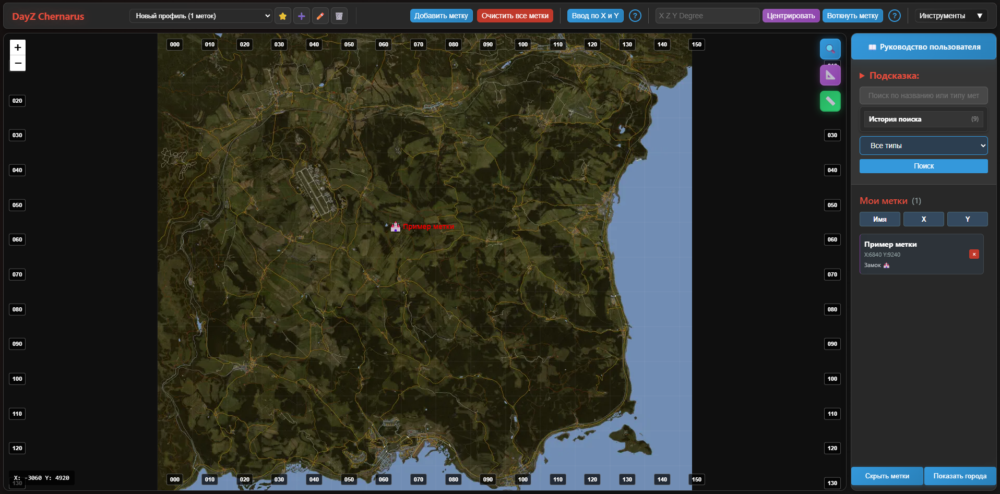

Совместимость с аддонами
Карта полностью совместима с популярным аддоном LBmaster (LBGroup) для DayZ:
- ✅ Автоматический импорт меток из игры
- ✅ Экспорт меток обратно в игру
- ✅ Все типы иконок LBmaster поддерживаются
- ✅ Цвета и названия меток сохраняются
- ✅ Z-координата (высота) поддерживается
Обзор интерфейса
Карта состоит из трех основных частей:
- Карта - основная область с интерактивной картой Чернаруси
- Панель управления - верхняя панель с кнопками для работы с метками
- Боковая панель - поиск, фильтрация и список ваших меток

Основные функции
1. Добавление меток
Добавление метки кликом по карте (не поддерживает высоту)
- Нажмите кнопку "Добавить метку" на панели управления
- Кнопка покажет текст "Кликните на карту для размещения метки"
- Кликните в нужном месте на карте
- Появится окно настройки новой метки
Добавление метки по координатам (не поддерживает высоту)
- Введите координаты X и Y в поля на панели управления
- Нажмите "Добавить по координатам"
- Появится окно настройки новой метки
2. Работа с координатами DayZ (есть поддержка высоты)
Центрирование по координатам из игры
- Скопируйте координаты в игре (вкладка "Информация" → "Копировать координаты")
- Вставьте координаты в поле формата
"X Z Y Degree"
- Нажмите "Центрировать"
- Карта покажет указанное место
Добавление метки по координатам из игры
- Введите координаты DayZ в поле
"X Z Y Degree"
- Нажмите "Воткнуть метку"
- Карта центрируется и открывается окно создания метки
3. Поиск и фильтрация меток
Простой поиск
- Введите текст в поле поиска на боковой панели
- Карта покажет только метки, содержащие введенный текст
Расширенный поиск
Используйте специальные операторы:
- Пробел - И (AND)
- | - ИЛИ (OR)
- Кавычки - точная фраза
- @тип - поиск по типу метки (например: @дом, @машина)
- @@тип - точное совпадение типа
Примеры:
мой дом - найдет метки, содержащие "мой" И "дом"дом|склад - найдет метки, содержащие "дом" ИЛИ "склад""мой дом" - точное совпадение фразы@дом - все метки типа "дом"@@дом - метки с точно типом "дом"
Фильтр по типу
Выберите тип метки в выпадающем списке "Все типы" для показа только определенных меток.
4. Управление метками
Просмотр списка меток
Все ваши метки показаны в списке "Мои метки" на боковой панели. Каждая метка содержит:
- Название
- Координаты X, Y
- Тип метки
Редактирование метки
- Двойной клик по метке на карте
- В окне редактирования можно изменить название, тип, цвет и координаты
Сортировка меток
Нажмите кнопки Имя, X, Y для сортировки списка меток:
- Первый клик - по возрастанию (↑)
- Второй клик - по убыванию (↓)
- Третий клик - сброс сортировки
Удаление метки
- Откройте метку для редактирования двойным кликом по метке на карте
- Нажмите красную кнопку "Удалить" в окне редактирования ИЛИ удалите метку в списке "Мои метки" нажав на красный крестик
5. Массовое редактирование
Как использовать
- Выполните поиск, чтобы отобрать нужные метки
- Нажмите "Массовое редактирование"
- В окне выберите действия:
- Изменить тип - выбрать новый тип для всех найденных меток
- Изменить цвет - кликните на палитру или введите RGB значения
- Изменить название - добавить префикс/суффикс или переименовать все
- Удалить все - ⚠️ удалит все найденные метки
6. Импорт и экспорт меток
Импорт меток из игры (LBmaster/LBGroup)
Важно: Перед импортом меток из игры необходимо сначала разделить файл по серверам с помощью специального инструмента. Подробная инструкция в разделе "Разделитель файлов по серверам".
Быстрый импорт (рекомендуется)
- Найдите файл
PrivateMarkers.json в папке игры:
C:\Users\%USERNAME%\AppData\Local\DayZ\LBmaster\Config\LBGroup\
Совет: Быстро скопировать путь к папке с метками можно через меню Инструменты → «Копировать путь к папке с метками». Также там доступен ярлык для быстрого перехода к папке (скачивается ZIP-архив).
- Откройте разделитель файлов кликнув по кнопке Splitter в меню Инструменты
- Загрузите ваш JSON файл в разделитель
- Скачайте готовые файлы для нужных серверов
- Импортируйте соответствующий файл на нужную веб-карту:
- Для Чернаруси: dayzmap.silthost.ru
- Для Deadfall: deadfall.silthost.ru
- Для DeerIsle: deerisle.silthost.ru
Ручной импорт (для опытных пользователей)
Если вы хотите импортировать метки только с одного сервера:
- Скопируйте файл
PrivateMarkers.json в удобное место
- Откройте файл в текстовом редакторе
- Очистите файл - удалите все серверы кроме нужного
- Нажмите "Импорт меток" на панели управления карты
- Выберите подготовленный JSON файл
Внимание: При ручном импорте убедитесь, что вы импортируете метки только с серверов, соответствующих текущей карте. Неправильный импорт может привести к ошибкам отображения.
Импорт произвольных JSON файлов
- Нажмите "Импорт меток" в меню Инструменты
- Выберите любой JSON файл с метками в формате DayZ/LBmaster
- Система автоматически добавит метки на карту
Экспорт меток в игру (LBmaster/LBGroup)
Карта позволяет экспортировать метки обратно в игру для использования с LBmaster/LBGroup.
Экспорт для одного или нескольких серверов
- Нажмите "Экспорт меток" (рядом с импортом)
- Введите IP-адрес и порт вашего сервера (при необходимости добавьте еще поля ввода кнопкой "+ Добавить сервер")
- Нажмите "Экспортировать"
- Скачается готовый JSON файл со всеми вашими метками
- Скопируйте файл в папку LBmaster:
C:\Users\%USERNAME%\AppData\Local\DayZ\LBmaster\Config\LBGroup\
Совет: Быстро скопировать путь к папке можно через меню Инструменты → «Копировать путь к папке с метками».
Важно: Перед копированием файла в папку по пути выше, обязательно сделайте копию Вашего оригинального файла с метками
Важно: Перед копированием файла в папку по пути выше, вы должны выйти из игры или быть на экране выбора сервера в клиенте игры
7. Дополнительные функции
Показать/скрыть все метки
- Кнопка "Скрыть все метки" внизу боковой панели
- Переключает видимость всех меток на карте
- Сохраняет настройки между сессиями
Очистка всех меток
- Красная кнопка "Очистить все метки" требует подтверждения
- ⚠️ Удалит все метки без возможности восстановления
История поиска
- Разверните "История поиска" на боковой панели
- Кликните по предыдущему запросу для быстрого повторения
- Нажмите "Очистить историю" для удаления всех записей
- Сохраняет до 10 последних поисковых запросов
Управление видимостью названий городов
- Кнопка "Скрыть города" / "Показать города" внизу боковой панели
- Переключает отображение названий населенных пунктов на карте
- Помогает очистить карту от лишней информации при необходимости
8. Типы меток
Карта поддерживает все типы меток LBmaster/LBGroup - полное соответствие типов иконкам из аддона. Все метки, которые вы видите в игре, будут правильно отображаться на карте:
🏠
Дома и лагеря
Дом H, Лагерь C, Безопасная зона S
🏪
Места
Черный рынок B, Госпиталь +, Ресторан 🍴, Почта ✉, Банк 💳, Замок 🏰, Станция рейнджера 🌲
🚗
Транспорт
Автомобиль 🚗, Парковка P, Вертолет 🚁, Железная дорога 🚆, Корабль ⛴, Скутер 🛵
🎯
Военные объекты
Снайпер ⊙, Блокпост 🚧
👥
Другое
Игрок P, Флаг ⚑, Звезда ★, Корова 🐄, Медведь 🐻, Ремонт авто 🔧, Коммуникации 📡, Стадион 🏟, Череп 💀, Ракета 🚀, BBQ 🍖, Пинг 📍, Круг ●, Треугольник ▲, Вода 💧
🛣️ Построение маршрутов
Карта позволяет строить маршруты между точками для планирования путешествий по Чернаруси.
Как построить маршрут
- Нажмите кнопку "Ввод по X и Y" на панели управления
- Введите координаты начальной точки в поля X и Y
- Нажмите кнопку "Построить маршрут"
- В открывшемся окне введите ваши текущие координаты в формате DayZ
- Нажмите "Продолжить" для построения маршрута
Формат координат DayZ
Для построения маршрута используйте координаты из игры в строгом формате:
<X Z Y> Degree
Пример правильного формата:
<9462 6 2015> 0 Degree
Структура формата
- < ... > — обязательные угловые скобки
- X — координата по горизонтали (0–15360)
- Z — высота над уровнем земли
- Y — координата по вертикали (0–15360)
- Degree — направление взгляда в градусах (0–360), слово обязательно
Как скопировать координаты в игре
- Откройте вкладку "Информация" на карте (M)
- Нажмите "Копировать координаты"
- Вставьте скопированный текст в поле ввода маршрута
⚠️ Важные требования к формату
- Угловые скобки
< и > — обязательны
- Слово
Degree — обязательно
- Пробелы между значениями — обязательны
- Регистр слова Degree — любой (degree, Degree, DEGREE)
Если формат неверный — система покажет ошибку с указанием на неправильный формат. Проверьте наличие всех элементов.
Примеры правильного формата
<9462 6 2015> 0 Degree
<1234 0 5678> 180 Degree
<8000 12 3000> 90 Degree
Распространённые ошибки
- ❌
9462 6 2015 0 — нет скобок и слова Degree
- ❌
9462 6 2015 Degree — нет скобок
- ❌
<9462 6 2015> — нет направления Degree
- ❌
<9462,6,2015> 0 Degree — запятые вместо пробелов
Управление маршрутом
- Построить маршрут — создает новый маршрут от указанной точки
- Очистить маршрут — удаляет текущий маршрут с карты
- Маршрут отображается в виде линии на карте
- Можно строить несколько маршрутов для сравнения
Совет: Используйте построение маршрутов для планирования безопасных путей между важными точками, избегая опасных зон. Если вы получили ошибку формата, проверьте что координаты скопированы полностью из игры, включая скобки и слово Degree.
Поиск городов
Отдельный функционал для быстрого поиска населенных пунктов Чернаруси с автодополнением.
Как использовать поиск городов
- Найдите поле "Поиск города..." на панели управления
- Начните вводить название города (например: "Черн", "Электр", "Бер")
- Система автоматически покажет до 10 подходящих вариантов
- Выберите город из списка или продолжайте вводить название для сужения поиска подходящих вариантов
- Карта автоматически центрируется на выбранном городе
Особенности поиска городов
- Автодополнение - результаты появляются при вводе
- Чувствительность к регистру - поиск работает независимо от регистра
- Быстрая навигация - клик по результату мгновенно перемещает карту
- Все населенные пункты - от крупных городов до маленьких деревень
Доступно более 200 населенных пунктов: Черногорск, Электрозаводск, Березино, Североград, Зеленогорск и многие другие.
👤 Профили пользователей
Система профилей позволяет создавать и переключать различные наборы меток. Каждый профиль — это отдельный набор меток с собственными настройками.
Зачем нужны профили?
- Разделение по персонажам — разные наборы меток для каждого персонажа
- Группировка по целям — отдельные профили для PvP, исследования, лута
- Совместное использование — один профиль для личной игры, другой для командной
- Резервное копирование — возможность хранить несколько версий меток
Панель управления профилями
Панель профилей расположена в верхней части страницы, над основной панелью управления:
📋
Селектор профилей
Выпадающий список для выбора активного профиля
⭐
Профиль по умолчанию
Назначить текущий профиль загружаемым по умолчанию
➕
Создать профиль
Создать новый профиль с пустым набором меток
✏️
Редактировать имя
Изменить название текущего профиля
🗑️
Удалить профиль
Удалить текущий профиль (кроме профиля по умолчанию)
Создание нового профиля
- Нажмите кнопку ➕ в панели профилей
- Введите уникальное имя профиля (например, "PvP", "Исследование", "Персонаж 1")
- Нажмите "Создать"
- Новый профиль будет создан с пустым набором меток
- Добавьте метки на карту — они сохранятся в текущем профиле
Переключение между профилями
- Откройте выпадающий список профилей
- Выберите нужный профиль из списка
- Карта автоматически загрузит метки выбранного профиля
- Все изменения сохраняются в активный профиль
Важно: При переключении профиля текущие метки автоматически сохраняются. Убедитесь, что вы закончили редактирование перед переключением.
Профиль по умолчанию
Профиль по умолчанию автоматически загружается при открытии карты:
- Выберите нужный профиль в списке
- Нажмите кнопку ⭐
- Профиль будет помечен как профиль по умолчанию
- При следующем посещении карты этот профиль загрузится автоматически
Редактирование имени профиля
- Выберите профиль, который хотите переименовать
- Нажмите кнопку ✏️
- Введите новое имя в диалоговом окне
- Нажмите "Сохранить"
Удаление профиля
- Выберите профиль, который хотите удалить
- Нажмите кнопку 🗑️
- Подтвердите удаление в диалоговом окне
- Профиль и все его метки будут удалены
Внимание:
- Нельзя удалить профиль по умолчанию
- При удалении текущего профиля система автоматически переключится на профиль по умолчанию
- Удаление необратимо — все метки профиля будут потеряны
Автоматическое сохранение
Профили автоматически сохраняются в браузере:
- При переключении профиля текущие метки сохраняются
- При добавлении/удалении/редактировании меток изменения сохраняются
- Настройки видимости меток сохраняются для каждого профиля
- Последние параметры меток (тип, цвет) запоминаются
Совет: Используйте профили для разделения меток по разным серверам или типам активности. Например: "Основной" для повседневной игры, "Рейд" для военных операций, "Торговля" для маршрутов к торговым точкам.
Миграция старых данных
При первом запуске системы профилей старые метки автоматически переносятся в профиль по умолчанию. Вы можете продолжить работу с ними или создать новые профили для организации меток.
📐 Рисование фигур на карте
Инструмент для рисования геометрических фигур на карте для обозначения зон интереса, опасных территорий или маршрутов.
Доступные фигуры
⭕
Круг
Круглая область с настраиваемым радиусом
⬜
Прямоугольник
Прямоугольная область по двум углам
〰️
Линия
Ломаная линия из нескольких точек
⬠
Многоугольник
Замкнутая область произвольной формы
Как рисовать фигуры
- Нажмите кнопку "Инструменты" в верхней панели
- В выпадающем меню найдите панель рисования (иконка 📐)
- Выберите тип фигуры: круг, прямоугольник, линия или многоугольник
- Следуйте подсказкам для рисования:
- Круг: первый клик — центр, второй клик — радиус
- Прямоугольник: первый клик — первый угол, второй клик — противоположный угол
- Линия/Многоугольник: клики по точкам, Enter — завершить, Escape — отменить
Управление фигурами
- Выделение: клик по фигуре выделяет её
- Контекстное меню: правый клик по фигуре открывает меню с опциями
- Изменение цвета: в контекстном меню можно изменить цвет заполнения и контура
- Удаление: нажмите Delete при выделенной фигуре или выберите "Удалить" в контекстном меню
- Двойной клик: удаляет фигуру с подтверждением
Горячие клавиши при рисовании
- Escape — отменить рисование
- Enter — завершить рисование линии/многоугольника
- Delete — удалить выделенную фигуру
Экспорт и импорт фигур
Фигуры сохраняются в браузере и привязываются к текущему профилю. Для переноса фигур между устройствами:
- Нажмите "Инструменты" → "Экспорт фигур"
- Скачается JSON файл со всеми фигурами
- Для загрузки: "Инструменты" → "Импорт фигур"
Важно: Фигуры сохраняются отдельно от меток и привязываются к текущему профилю пользователя.
📏 Измерение расстояний
Инструмент "линейка" для точного измерения расстояний между точками на карте.
Как использовать измерение расстояний
- Нажмите кнопку "Инструменты" в верхней панели
- В выпадающем меню найдите панель измерения (иконка 📏)
- Нажмите кнопку "Начать измерение"
- Кликайте по карте для добавления точек измерения
- Нажмите Enter для завершения измерения
Отображение расстояний
Во время измерения отображаются:
- Последний сегмент: расстояние между последней добавленной точкой и курсором
- Общее расстояние: суммарная длина всех сегментов
- Метки на карте:
- Красные точки — места кликов
- Подписи сегментов — расстояние каждого отрезка
- Подписи накопленного расстояния — общая длина от начала
Форматы отображения расстояния
- < 1 м — отображается в сантиметрах (например, "50 см")
- 1–10 м — отображается с точностью до сотых (например, "5,25 м")
- 10–100 м — отображается с точностью до десятых (например, "45,3 м")
- > 100 м — округляется до целых метров (например, "250 м")
Управление измерением
- Enter — завершить измерение (линии станут полупрозрачными)
- Escape — отменить измерение и удалить все линии
- 🗑️ Очистить — удалить все измерения с карты
Совет: Используйте измерение расстояний для планирования маршрутов, определения дистанции до целей или расчёта безопасных расстояний между объектами.
🔲 Выделение области и поиск в области
Инструмент для выделения произвольной области на карте и поиска меток внутри неё.
Как использовать выделение области
- Нажмите кнопку "Инструменты" в верхней панели
- Выберите "Выделение и поиск в области"
- Кликайте по карте для добавления точек полигона
- Нажмите Enter для завершения выделения
- Система автоматически найдёт все метки внутри области
Результаты выделения
После завершения выделения:
- Область подсвечивается зелёным полигоном
- Найденные метки отображаются в боковой панели
- Автоматически активируется режим массового редактирования
- Доступна кнопка "Экспорт найденных"
Горячие клавиши
- Enter — завершить выделение области
- Escape — отменить выделение
Снятие выделения
Для снятия выделения области:
- Выполните любой новый поиск
- ИЛИ очистите фильтр поиска
- Зелёный полигон исчезнет, показывая все метки
Важно: Для выделения области необходимо минимум 2 точки. Полигон автоматически замыкается для отображения.
⏱️ Таймеры забегов
Инструмент для отслеживания времени кругов в забегах и соревнованиях.
Как открыть таймеры
- Нажмите кнопку "Инструменты" в верхней панели
- Выберите "Таймеры"
- Откроется отдельная вкладка с таймерами в новом окне
Основные возможности
- Несколько забегов: создание неограниченного количества вкладок-забегов
- Добавление кругов: добавляйте круги для каждого забега
- Контроль времени: старт, пауза, остановка для каждого круга
- Ручной ввод: возможность ввести время вручную в формате чч:мм:сс
- Комментарии: добавление комментариев к каждому кругу
- Сохранение: все данные автоматически сохраняются в браузере
Управление таймером
- Добавить круг: нажмите кнопку "Добавить круг"
- Старт/Пауза: запускает или приостанавливает таймер круга
- Стоп: останавливает и обнуляет таймер
- Ручной ввод: кликните по полю времени для ввода значения
- Комментарий: введите текст в поле комментария
Формат ввода времени
Время можно вводить в форматах:
- сс — только секунды (например, "45" = 00:00:45)
- ммсс — минуты и секунды (например, "1230" = 00:12:30)
- ччммсс — часы, минуты, секунды (например, "011530" = 01:15:30)
Управление забегами
- Добавить забег: кнопка "+" в заголовке
- Переключение: клик по вкладке забега
- Переименование: введите новое имя в поле вкладки
- Удаление: нажмите "×" на вкладке (нельзя удалить единственный забег)
Совет: Данные таймеров сохраняются в браузере и восстанавливаются при следующем посещении. Для сброса всех данных очистите localStorage браузера.
💱 Конвертер валют (YourWorld)
Быстрый доступ к конвертеру валют для серверов YourWorld.
Как использовать
- Нажмите кнопку "Инструменты" в верхней панели
- Выберите "Конвертер валюты (YourWorld)"
- Откроется внешн����й сервис в новой вкладке:
ywconverter.silthost.ru
Настройка курса валют
Конвертер позволяет установить индивидуальный курс валют вручную:
- Откройте конвертер валют
- Нажмите на иконку ⚙️ Ше��терёнка в правом верхнем углу
- Откроется панель дополнительных настроек
- Введите нужный курс валют в соответствующие поля
- Нажмите "Сохранить" для применения настроек
Примечание: Установленный вручную курс сохраняется в браузере и используется при следующих конвертациях.
Темы оформления
Карта поддерживает три различные темы оформления для комфортной работы в любое время суток.
Доступные темы
🌙
Стандартная (темная)
Темная тема для комфортной работы в вечернее время и ночью
☀️
Светлая
Светлая тема для дневной работы и хорошей видимости на ярких мониторах
❄️
Зимняя
Специальная зимняя тема с холодными оттенками для атмосферы зимней карты
Как сменить тему
- Найдите селектор тем в правой части панели управления
- Выберите желаемую тему из выпадающего списка
- Изменение применяется мгновенно
- Выбранная тема автоматически сохраняется между сессиями
Преимущества тем
- Сохранение выбора - тема запоминается и восстанавливается при следующем посещении
- Адаптивность - все элементы интерфейса подстраиваются под выбранную тему
- Комфорт для глаз - выберите подходящую тему для разных условий освещения
- Атмосфера - зимняя тема создает особое настроение для игры
Разделитель и объединитель файлов по серверам
Специальный инструмент для работы с JSON файлами меток. Поддерживает две операции:
- Разделение - автоматическое разделение файлов по разным серверам и картам
- Объединение сбор меток с разных карт в один файл для импорта в игру
Это особенно полезно, когда вы играете на нескольких серверах с разными картами.
Зачем нужен разделитель?
Когда вы экспортируете метки из игры, файл PrivateMarkers.json может содержать метки с разных серверов и карт. Для корректной работы с картой нужно разделить эти метки по соответствующим серверам.
Как использовать разделитель
- Откройте кликнув по кнопке Splitter в меню Инструменты
- Перетащите ваш JSON файл в область загрузки или нажмите кнопку "Выберите файл"
- Система автоматически определит серверы и создаст отдельные файлы для каждого
- Скачайте нужные файлы кнопками "Скачать" или "Скачать все"
Поддерживаемые серверы и карты
Разделитель автоматически распознает следующие серверы:
🗺️
Чернарусь (Chernarus)
Серверы: 109.248.4.32:2200, 109.248.4.32:2206, 109.248.4.106:2200, 109.248.4.106:2206
🏔️
Deadfall
Серверы: 109.248.4.32:2212, 109.248.4.106:2212
🏰
DeerIsle
Серверы: 109.248.4.32:2218, 109.248.4.106:2218
Импорт разделенных файлов на веб-карты
После разделения файла вам нужно импортировать соответствующие файлы на правильные веб-карты:
📍 Для серверов с картой Чернарусь:
- Откройте веб-карту: dayzmap.silthost.ru
- Нажмите кнопку "Импорт меток"
- Выберите файл с названием
PrivateMarkers_YW_chernarus-X.json
- Все метки с серверов Чернарусь появятся на карте
🏔️ Для серверов с картой Deadfall:
- Откройте веб-карту: deadfall.silthost.ru
- Нажмите кнопку "Импорт меток"
- Выберите файл с названием
PrivateMarkers_YW_deadfall-X.json
- Все метки с серверов Deadfall появятся на соответствующей карте
🏰 Для серверов с картой DeerIsle:
- Откройте веб-карту: deerisle.silthost.ru
- Нажмите кнопку "Импорт меток"
- Выберите файл с названием
PrivateMarkers_YW_dungeon-X.json
- Все метки с серверов DeerIsle появятся на соответствующей карте
Важные моменты
- Обязательно разделяйте файл перед импортом - каждая онлайн карта правильно отображает метки только ей принадлежащие
- Проверяйте название файла - убедитесь, что вы импортируете правильный файл на соответствующую карту
- Сохраняйте оригинальный файл - рекомендуется сделать резервную копию исходного JSON файла
- Файлы автоматически именуются - система присваивает понятные имена в зависимости от сервера (применимо только для YourWorld PVE)
Преимущества использования разделителя
- ✅ Автоматическое определение серверов - не нужно вручную разбирать JSON файл
- ✅ Правильные имена файлов - система создает файлы с понятными названиями (применимо только для YourWorld PVE, в остальных случаях в названии будет отображаться ip-port)
- ✅ Предотвращение ошибок - исключает возможность импорта меток не на ту карту
- ✅ Экономия времени - одна операция вместо ручного редактирования
- ✅ Поддержка всех серверов - работает со всеми известными серверами проекта YourWorld PVE
Совет: Если вы регулярно играете на нескольких серверах, сохраните разделенную копию файлов для каждой карты. Это позволит вам быстро импортировать метки при необходимости.
Объединение файлов для импорта в игру
Объединение позволяет собрать метки с разных веб-карт в один файл для импорта обратно в игру. Это полезно, когда вы хотите иметь все свои метки доступными в игре на всех серверах.
Зачем нужно объединение?
- Собрать все метки с Чернаруси, Deadfall и DeerIsle в один файл
- Импортировать объединенный файл в игру для доступа ко всем меткам
- Синхронизировать метки между игрой и веб-картами
- Создать резервную копию всех меток с разных карт
Как использовать объединение
- Откройте объединитель файлов кликнув по кнопке Splitter
- Выберите режим "Объединить файлы"
- Загрузите JSON файлы с разных карт:
- Файлы с Чернаруси (dayzmap.silthost.ru)
- Файлы с Deadfall (deadfall.silthost.ru)
- Файлы с DeerIsle (deerisle.silthost.ru)
- Нажмите кнопку "Объединить"
- Скачайте готовый объединенный файл
- Скопируйте файл в папку игры:
C:\Users\%USERNAME%\AppData\Local\DayZ\LBmaster\Config\LBGroup\
Совет: Быстро скопировать путь к папке можно через меню Инструменты → «Копировать путь к папке с метками».
Пример использования объединения
🔄 Полный цикл работы с метками:
- Экспорт из игры - получите PrivateMarkers.json с метками со всех серверов
- Разделение - разделите файл на отдельные файлы для каждой карты
- Работа в веб-картах - импортируйте файлы на соответствующие карты и редактируйте метки
- Объединение - соберите обновленные файлы обратно в один JSON
- Импорт в игру - загрузите объединенный файл обратно в игру
Важные моменты при объединении
- Проверяйте дубликаты - одинаковые метки могут объединиться
- Сохраняйте резервные копии - перед объединением сделайте копии исходных файлов
- Координаты сохраняются - все координаты меток остаются в правильном формате
- Типы меток - все типы иконок LBmaster поддерживаются
Преимущества объединения
- ✅ Все метки в одном файле - удобство работы с метками в игре
- ✅ Автоматическое определение серверов - не нужно вручную указывать IP адреса
- ✅ Сохранение структуры - формат файла остается совместимым с LBmaster
- ✅ Поддержка всех карт - работает с метками из всех веб-карт проекта
- ✅ Быстрая синхронизация - одна операция вместо ручного копирования
Совет: Используйте объединение после редактирования меток на веб-картах, чтобы синхронизировать изменения с игрой. Регулярно создавайте резервные копии объединенных файлов.
Совет: Если вы регулярно играете на нескольких серверах, сохраните разделенную копию файлов для каждой карты. Это позволит вам быстро импортировать метки при необходимости.
Расширенный поиск и фильтрация
Мощные инструменты для работы с большим количеством меток и быстрого поиска нужной информации.
Экспорт найденных меток
После выполнения поиска появляется дополнительная кнопка "Экспорт найденных".
Как использовать экспорт найденных меток
- Выполните поиск по любому критерию (название, тип, комбинированный поиск)
- Нажмите кнопку "Экспорт найденных" под полем поиска
- Введите IP-адреса серверов для экспорта (можно добавить несколько)
- Нажмите "Экспортировать"
- Скачается JSON файл только с отфильтрованными метками
Улучшенная история поиска
- Автоматическое сохранение - каждый поисковый запрос сохраняется автоматически
- Быстрый доступ - клик по элементу истории мгновенно выполняет поиск
- Умное управление - дубликаты не сохраняются, хранится до 10 уникальных запросов
- Очистка - кнопка "Очистить историю" удаляет все сохраненные запросы
Продвинутые операторы поиска
Комбинированные примеры:
лагерь|@дом - найдет метки с названием "лагерь" ИЛИ типа "дом"@медведь|@череп - найдет все метки типа "медведь" ИЛИ "череп""мой секрет"|@🚗 - точная фраза ИЛИ автомобильные меткибаза @военный - метки содержащие "база" И тип "военный"
Сортировка результатов
После поиска можно сортировать найденные метки:
- По имени - алфавитная сортировка названий
- По координате X - сортировка по горизонтали
- По координате Y - сортировка по вертикали
- Три режима: по возрастанию, по убыванию, без сортировки
Важно: При активном поиске обычные кнопки экспорта и импорта недоступны. Используйте кнопку "Экспорт найденных" для работы с отфильтрованными метками.
Советы по использованию
- Сохраняйте важные точки - метки автоматически сохраняются в браузере
- Используйте цвета - разные цвета помогут отличать типы меток
- Делайте понятные названия - используйте описательные имена для меток
- Экспортируйте данные - регулярно делайте резервные копии меток
- Используйте поиск - для быстрого нахождения нужных точек среди множества меток
- Планируйте маршруты - используйте построение маршрутов для безопасного перемещения
- Быстрый поиск городов - используйте автодополнение для быстрой навигации по карте
- Выбирайте тему - смените тему для комфортной работы в разное время суток
- Фильтруйте перед экспортом - используйте поиск для экспорта только нужных меток
- История поиска - используйте сохраненные запросы для быстрого повторного поиска
- Управляйте видимостью - скрывайте названия городов для очистки карты
- Массовое редактирование - экономьте время с помощью пакетных операций
- Используйте разделитель и объединитель - для работы с метками разных серверов используйте инструмент splitter
- Рисуйте фигуры - обозначайте опасные зоны, территории баз или маршруты движения
- Измеряйте расстояния - используйте линейку для расчёта дистанции между точками
- Выделяйте области - быстрый поиск меток в произвольной зоне на карте
- Используйте таймеры - отслеживайте время кругов в забегах и соревнованиях
Профессиональные приемы
Организация меток
- Используйте разные типы меток для категоризации (лагери, машины, точки интереса)
- Применяйте цветовую кодировку для быстрой визуальной идентификации
- Добавляйте префиксы к названиям для группировки (например, "Лагерь-", "Машина-")
Эффективный поиск
- Комбинируйте операторы для точного поиска: @дом|@лагерь
- Используйте кавычки для поиска точных фраз: "секретный бункер"
- Фильтруйте по типу перед массовым редактированием
Планирование маршрутов
- Стройте маршруты от безопасных точек к целям
- Используйте несколько маршрутов для сравнения путей
- Объединяйте маршруты с метками опасных зон
Работа с фигурами
- Обозначайте кругами радиусы видимости или опасные зоны
- Используйте прямоугольники для маркировки территорий баз
- Рисуйте линиями маршруты патрулирования или движения
- Многоугольниками выделяйте сложные территории (леса, водоёмы)
Измерение расстояний
- Используйте для расчёта дистанции до целей
- Определяйте безопасное расстояние между объектами
- Планируйте маршруты с учётом реальных расстояний
Выделение области
- Быстрый поиск всех меток в интересующей зоне
- Массовое редактирование меток в определённой области
- Экспорт меток только из нужного региона карты
Поддержка и совместимость
Совместимость с DayZ аддонами
- ✅ LBmaster (LBGroup) - полная поддержка импорта/экспорта меток, совместимый формат данных
- ✅ Z-координата - поддержка высоты в метках
- ✅ Все типы иконок - соответствие игровым маркерам
Горячие клавиши
Общие
- Enter в поле поиска - выполнить поиск
- Enter в полях координат - добавить метку
- Enter в поле DayZ координат - центрировать
- Escape - закрыть модальные окна
- Delete при редактировании - удалить метку
Рисование фигур
- Escape - отменить рисование
- Enter - завершить рисование линии/многоугольника
- Delete - удалить выделенную фигуру
Измерение расстояний
- Enter - завершить измерение
- Escape - отменить измерение
Выделение области
- Enter - завершить выделение области
- Escape - отменить выделение
Таймеры
- Enter в поле времени - применить введённое время